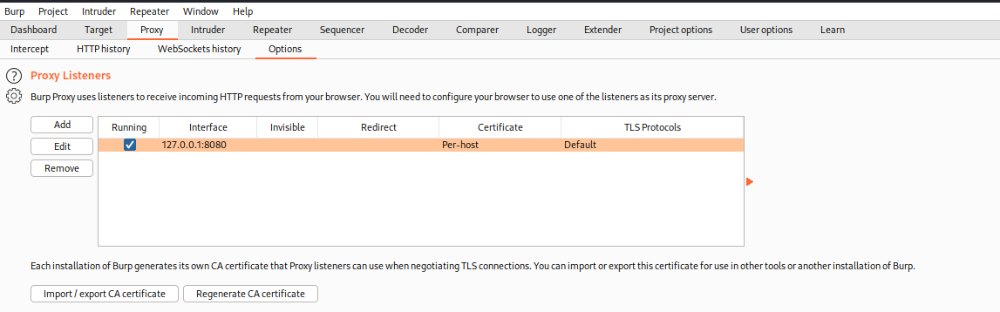

Proxying Burp through a Pivot host
Once we can connec via ssh through a pivot host we can use this pivot host to reach another host with Burp
ssh -N -D 8089 <user>@<PivotIP>
-C → will on compression for the SSH connection but it will slow down the connections!
-D → setups up dynamic port forwarding. 8089 will be the local port you’ll use for Burp’s Socks settings.

Now setup Burp SOCKS proxy with
◇ SOCKS proxy host: 127.0.0.1
◇ SOCKS proxy port: 8089
If we want that the traffic from Firefox go:
Firefox → Burp → Pivot Host → Target
Setup:
1. Firefox

2. In Burp we need to do two things:
1) To Proxy from Firefox to Burp

2) Proxy from Burp to the localhost port that we are using for SSH dynamic forwarding

3. Setup SSH dynamic forwarding